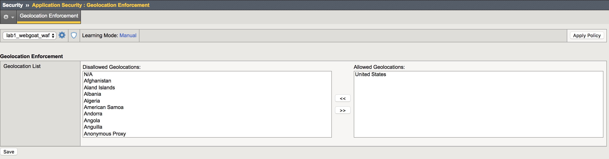
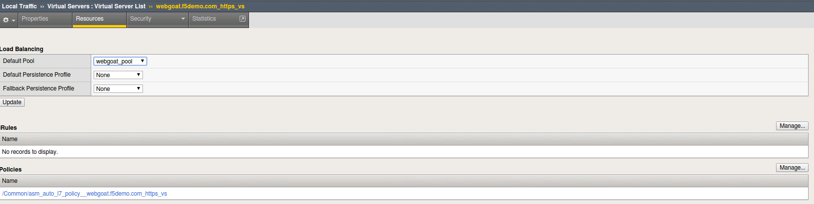
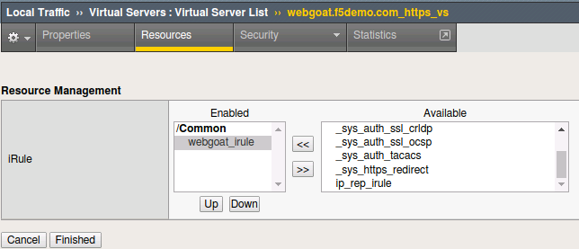
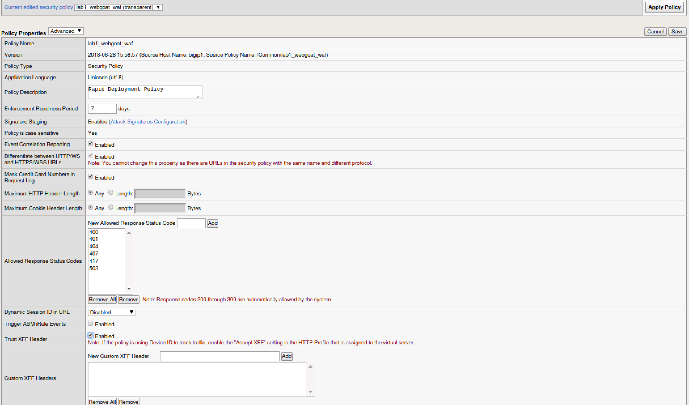
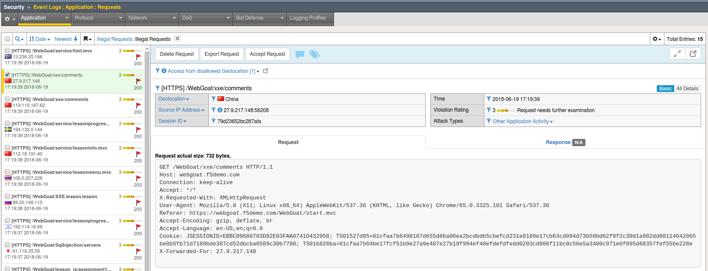
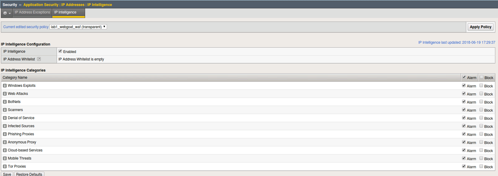
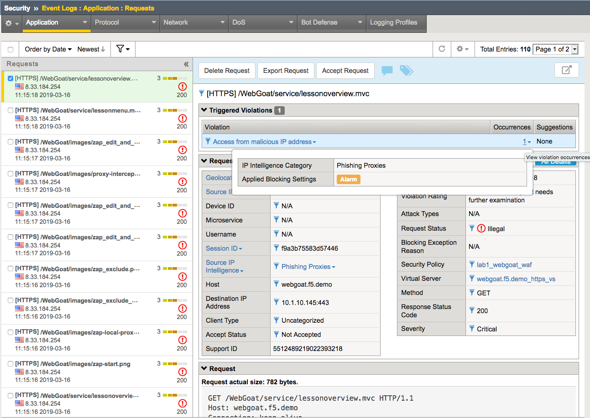
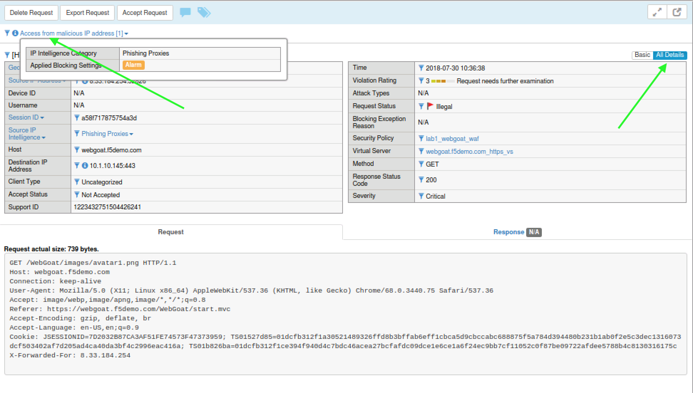

Geolocation
Open Security > Application Security > Geolocation Enforcement
Select all geolocations except the United States and N/A and move
them to Disallowed Geolocations. Save and then Apply Policy.
Note
N/A covers all RFC1918 addresses. If you aren’t dropping them
at your border router (layer 3), you may decide to geo-enforce at
ASM (Layer 7) if no private IP’s will be accessing the site.

Important
Remember to click on the Apply Policy button (top right) to commit security policy changes.
Open Local Traffic > iRules and open the iRule titled
webgoat_irule and review the code.
| when HTTP_REQUEST {
HTTP::header replace X-Forwarded-For "[expr (int(rand()*221)+1)].[expr int(rand()*254)].[expr int(rand()*254)].[expr int(rand()*254)]"
}
|
Note
The above iRule is essentially scanning the HTTP headers and when
it finds the X-Forwarded-For header it will replace the original source
IP address with a randomized IP address. Since we are only manipulating
the header this has no discernable affect on traffic flow. This iRule
event, when HTTP_REQUEST, also fires before the ASM policy allowing
this “trick” to work to demonstrate a global range of source IP
addresses.
Open Local Traffic > Virtual Servers and click on webgoat.f5.demo_https_vs. Go to the Resources
horizontal tab and click on Manage in the iRules section.

Select the webgoat_irule, move it to the Enabled assignment and
click Finished.

6. We now need to tell ASM to trust the XFF header by turning on the Trust XFF Header feature in the policy.
Navigate to Application Security > Policy > Policy Properties and hit the dropdown for Advanced View.
You can now set Trust XFF Header to Enabled and click Save Changes then Apply

Note
Regarding Trust XFF - you would do this if ASM is deployed behind an internal or other trusted proxy. Then, the system uses the IP address that initiated the connection to the proxy instead of the internal proxy’s IP address. This option is useful for logging, web scraping, anomaly detection, and the geolocation feature.
You should not configure trusted XFF headers if you think the HTTP header may be spoofed, or crafted, by a malicious client.
- Open a new Firefox Private window and connect to
https://webgoat.f5.demo/WebGoat/login. Login and select a few links on the WebGoat page.
- Navigate to Security > Event Logs > Application > Requests.

Notice the geolocation detected and the presence of the X-Forwarded-For (XFF) in the Request details. Your actual client IP is still 10.1.10.28 however, because we trusted the XFF header and the iRule is randomizing the IP address placed in that header so ASM believes the request is from an external location. Depending on your network you may be leveraging a technology that creates a source NAT ahead of ASM. So by leveraging the XFF header, you can work around this and get contextual information about the client.
Important
Please remove the iRule webgoat_irule from the
Virtual Server before proceeding.
IP Reputation
Navigate to Security > Application Security > IP Addresses > IP Intelligence and click Enabled.
For all categories select Alarm. Click on Save and then on Apply Policy.
Note
On the top right you should see that your IP Intelligence database has been updated at some point.

Note
In order to create traffic with malicious sources for the purposes of this lab we have created another special configuration item for you.
There is an iRule that you will apply to the webgoat.f5.demo_https_vs virtual server.
This iRule will insert an X-Forward-For header with the value of a malicious United States source IP address. (Remember US is an allowed Geolocation)
- Navigate to Local Traffic > Virtual Server > Virtual Servers List and select the
webgoat.f5.demo_https_vs virtual server.
Navigate to the Resources tab and click Manage for the iRules section.
Move the ip_rep_irule irule to the Enabled pane of the Resource Management configuration and Click Finished.
Open a new Private Browsing window in Firefox and enter https://webgoat.f5.demo/WebGoat/login to browse the site. Login using the f5student:<password provided by instructor> and Click on one or two items. You may need to click Add Exception to bypass an untrusted certificate in Firefox.
Navigate to Security > Event Logs > Application > Requests and review the log entries. Since you configured IP Intelligence violations to alarm you will not need to change the filter. Select the most recent entry and examine why the request is illegal. What IP address did the request come from?

Note
For more information click on the violation hyperlink to see the IPI category that this IP belongs to. You can also click “All Details” at the top right.

Bonus: You can browse to http://www.brightcloud.com/tools/url-ip-lookup.php
and look up the IP address in question for further information. There is also
a tool to report IP addresses that have been incorrectly flagged.
Further, you can ssh to the BIG-IP and login with root / password to run
the iprep_lookup command, similar to:
[root@bigip1.Active.Standalone] config # iprep_lookup 8.33.184.254
iprep_lookup 8.33.184.254
opening database in /var/IpRep/F5IpRep.dat
size of IP reputation database = 37026703
iprep threats list for ip = 8.33.184.254 is:
bit 7 - Phishing
{kind=link}
{kind=link}
{kind=link}
{kind=link}
{kind=link}
{kind=link}
{kind=link}
{kind=link}
{kind=link}
{kind=link}
{kind=link}
{kind=link}
{kind=link}
{kind=link}
{kind=link}
{kind=link}
{kind=link}
{kind=link}